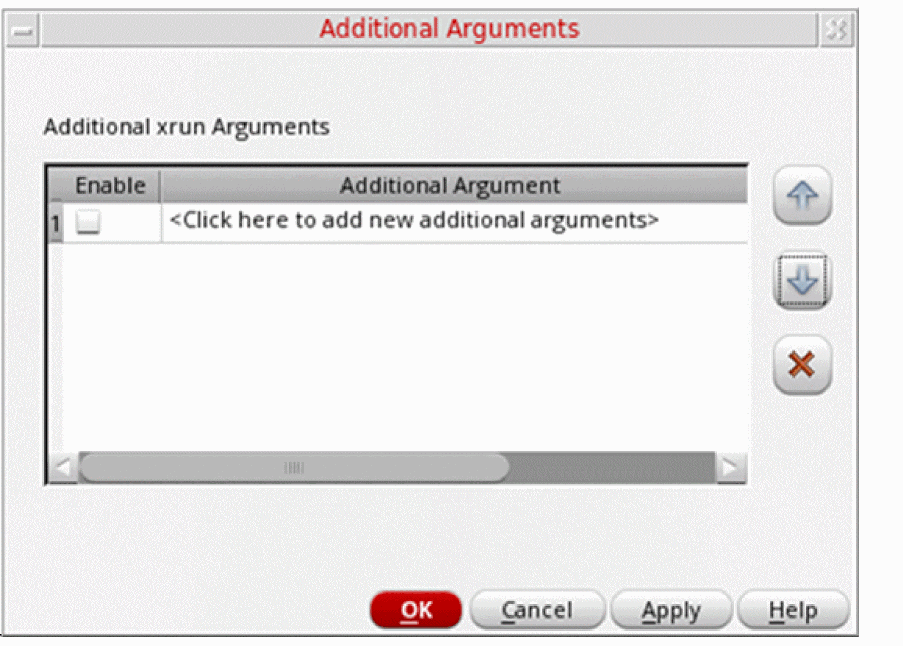

Specifying Additional xrun Arguments in SystemVerilog Netlister
To specify additional xrun arguments in the netlisting settings in SystemVerilog Netlister:
-
In the SystemVerilog Netlister window, click Browse to specify a design.
The fields in the window are populated with the design details. - Click Open Options Form to access the netlisting settings.
- In the Open Options Form window, click the Miscellaneous tab.
-
In the Miscellaneous page, click Additional Arguments.
The Additional Arguments form opens.
 -
Specify valid
xrunarguments in the Additional Arguments form.
These arguments are appended to thexrunArgsfile that is generated. If Create binding files for xrun only is enabled, SystemVerilog Netlister appends these additional arguments to both thexrunArgsandxrunArgs_vyfiles. -
Click OK.
The Additional Arguments form closes.
Related Topics
SystemVerilog Netlister Graphical User Interface
Return to top